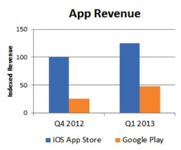
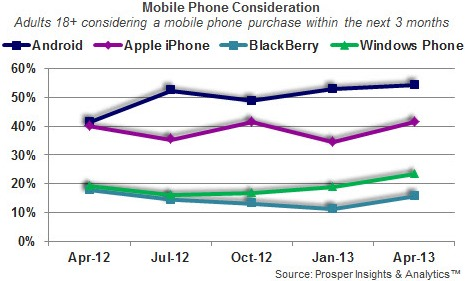
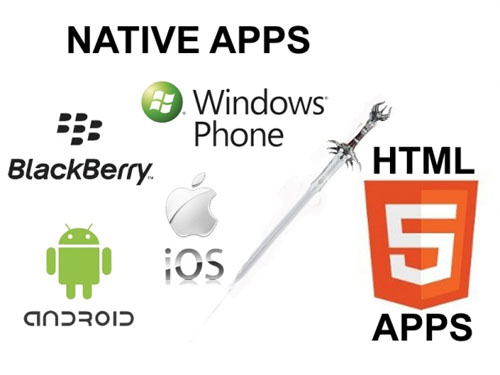
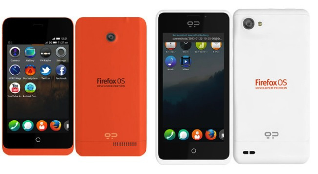
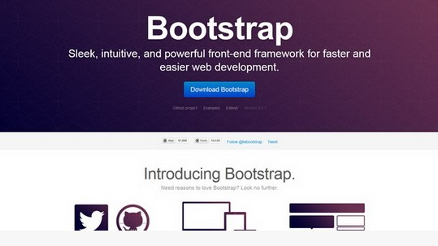

Sorry,你的浏览器不支持impress.js
请使用最新的Chrome, Safari 或者 Firefox浏览器
目前市场上移动设备搭载的系统版本主要集中在2.3和4.x上，这些版本共占据了94%的份额;
Android系统的开源性，在造就了其市场第一的地位外，还造成了这样不可控制的局面。

2013年1季度移动报告：目前谷歌Play中应用的下载量和营收的增长速度已经超过App Store，鉴于目前Android设备庞大的基数，谷歌Play未来将有可能全面赶超App Store。
苹果公司将于 6 月 10 – 14 日在旧金山举办今年的全球开发者大会（WWDC 2013），据 TNW 报道，今年 WWDC 门票创纪录地在 2 分钟内售罄。

调查显示有54.6%用户考虑下一部手机为安卓系统，41.5%的用户选择iPhone，有23%左右的用户选择了Windows Phone。

继Facebook放弃HTML5的移动应用后，LinkedIn也宣布放弃HTML5，而改用原生代码来实现。
来源：Why LinkedIn dumped HTML5& went native for its mobile apps

Geeksphone 推出的Firefox OS 开发者预览版手机，上线仅几小时并销售一空。该手机配置一般般，但是对于开发者和极客确实有相当大的吸引力。
来源：Firefox OS Developer Phones Sold Out After First Few Hours On Sale

CSS 框架如今层出不穷，这里列出Github上最受欢迎的一些CSS框架：
大家可以关注一下：Bootstrap、 Foundation 、 Animate.css
jQuery官方04-19正式发布了jQuery 2.0版本.该版本的主要变化如下：
Ⅰ、不再支持IE 6/7/8
Ⅱ、更加轻量,与1.9.1相比小了12%
Ⅲ、模块化,可以自定义构建更小、更轻量的版本
Ⅳ、兼容jQuery 1.9版本的API
YUI（Yahoo User Interface）发布了3.10.0版本.该版本的主要变化如下：
Ⅰ、Attribute和Base模块性能提升4倍
Ⅱ、CustomEvent性能提升了2~6倍，提升倍数依赖于用例场景
Ⅲ、Y.Tree模块新增了一个扩展Tree.Sortable，可以添加到任何Tree类
Ⅳ、弃用Profiler,移除dom-deprecated和node-deprecated模块
越来越多的开发者选择将自己的产品以开源形式发布，但是除了项目代码优秀外，还需要做很多工作才能让开源项目“发扬光大”。
Thank You！
使用空格键或箭头键切换页面